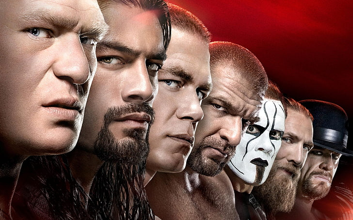

WWE Raw is an American professional wrestling television program produced by WWE, featuring wrestlers from the Raw brand, which airs live on Monday nights. Debuting in 1993, it is one of WWE's two flagship programs and is considered to be the most-watched, regularly scheduled, live year-round program on cable. Currently, the show is available on Netflix in addition to USA Network and other streaming platforms. Key facts Debut: January 11, 1993. Broadcast schedule: Live every Monday at 8 p.m. Eastern Time. Platform: Available on Netflix and USA Network, among other platforms. Content: Features live action, drama, and athleticism from the Raw brand's roster. Flagship status: Considered one of WWE's two main flagship programs, along with Friday Night SmackDown. Production: Produced by WWE, with a multi-camera setup and a flexible running time of approximately 150 minutes, including commercials. History: Originally a 60-minute show that was shot and aired to a live audience, breaking from the traditional pre-taped format of the time. Production and history The program was created by Vince McMahon. Its broadcast was expanded from 60 minutes to 180 minutes over time. The show's brand extension was discontinued from 2011 to 2016 before being reinstated.
